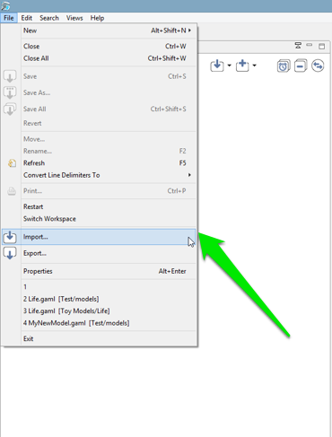
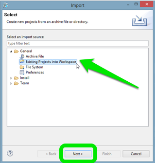
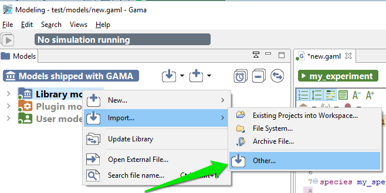
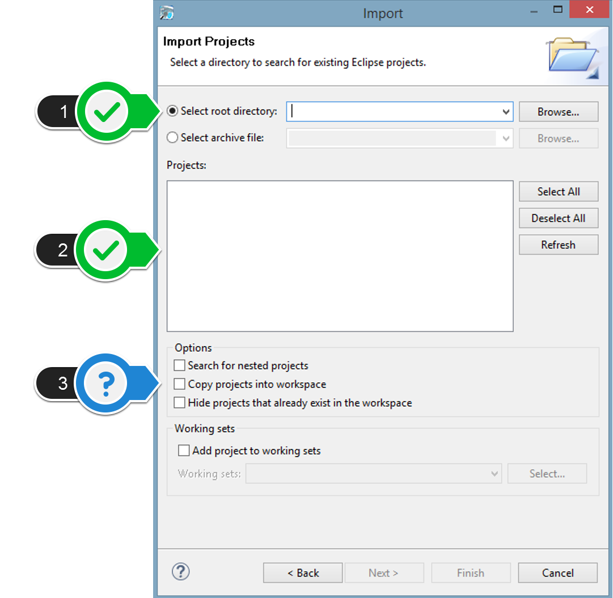

Importing Models
Importing a model refers to making a model file (or a complete project) available for edition and experimentation in the workspace. With the exception of headless experiments, GAMA requires that models be manageable in the current workspace to be able to validate them and eventually experiment them.
There are many situations where a model needs to be imported by the user: someone sent it to him/her by mail, it has been attached to an issue report, it has been shared on the web or an SVN server, or it belongs to a previous workspace after the user has switched workspace. The instructions below apply equally to all these situations.
Since model files need to reside in a project to be managed by GAMA, it is usually preferable to import a whole project rather than individual files (unless, of course, the corresponding models are simple enough to not require any additional resources, in which case, the model file can be imported with no harm into an existing project). GAMA will then try to detect situations where a model file is imported alone and, if a corresponding project can be found (for instance, in the upper directories of this file), to import the project instead of the file. As the last resort, GAMA will import orphan model files into a generic project called “Unclassified Models” (which will be created if it does not exist yet).
Table of contents
The “Import…” Menu Command
The simplest, safest and most secure way to import a project into the workspace is to use the built-in “Import…” menu command, available in the “File” menu or in the contextual menu of the Navigator.

When invoked, this command will open a dialog asking the user to choose the source of the importation. It can be a directory in the filesystem (in which GAMA will look for existing projects), a zip file, a SVN site, etc. It is safer in any case to choose “Existing Projects into Workspace”.

Note that when invoked from the contextual menu, “Import…” will directly give access to a shortcut of this source in a submenu.

Both options will lead the user to a last dialog where he/she will be asked to:
- Enter a location (or browse to a location) containing the GAMA project(s) to import
- Choose among the list of available projects (computed by GAMA) the ones to effectively import
- Indicate whether or not these projects need to be copied to or linked from the workspace (the latter is done by default)

Silent import
Another (possibly simpler, but less controllable) way of importing projects and models is to either pass a path to a model when launching GAMA from the command line or to double-click on a model file (ending in .gaml) in the Explorer or Finder (depending on your OS).
If the file is not already part of an imported project in the current workspace, GAMA will:
- silently import the project (by creating a link to it),
- open an editor on the file selected.
This procedure may fail, however, if a project of the same name (but in a different location) already exists in the workspace, in which case GAMA will refuse to import the project (and hence, the file). The solution in this case is to rename the project to import (or to rename the existing project in the workspace).
Drag’n Drop / Copy-Paste Limitations
Currently, there is no way to drag and drop an entire project into GAMA Navigator (or to copy a project in the filesystem and paste it in the Navigator). Only individual model files, folders or resources can be moved this way (and they have to be dropped or pasted into existing projects).
This limitation might be removed some time in the future, however, allowing users to use the Navigator as a project drop or paste target, but it is not the case yet.